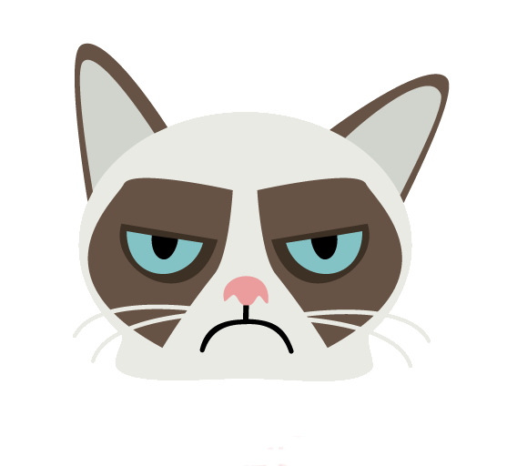

<div class="navbar-fixed">
    <nav>
      <div class="nav-wrapper">
          
          <a href="#" class="brand-logo left keepics-logo">KEEPICS <i class="material-icons right">favorite border</i></a>
          <div class="brand-logo navbar_slogan">
              <i>Register now to share pics & comments with your friends</i>
          </div>

            <ul class="right hide-on-med-and-down ">
                <li ui-sref-active="active"><a ui-sref="anon.home">Home</a></li>
                <li ui-sref-active="active"><a ui-sref="anon.register">Register</a></li>
            </ul>
        </div>
    </nav>
</div>
